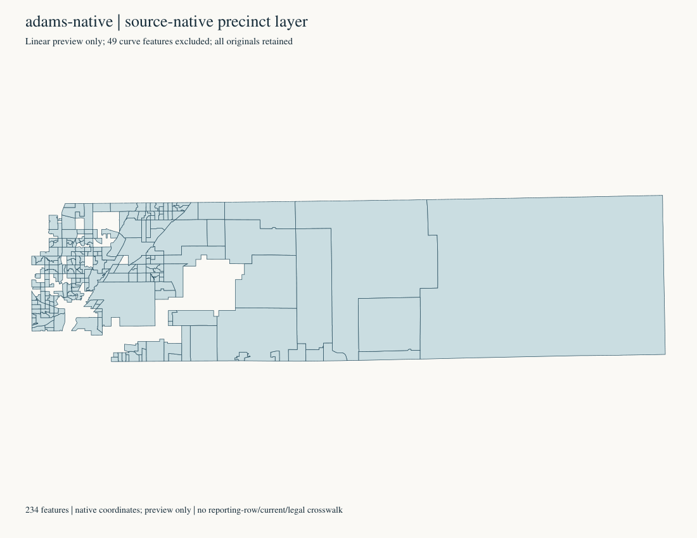
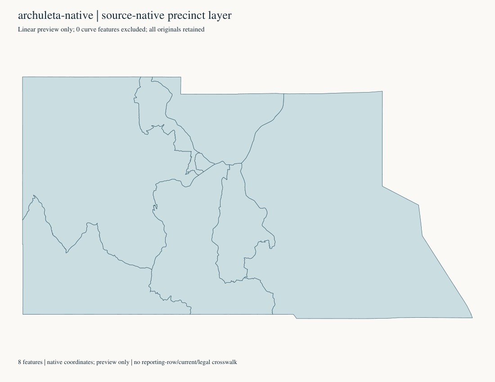
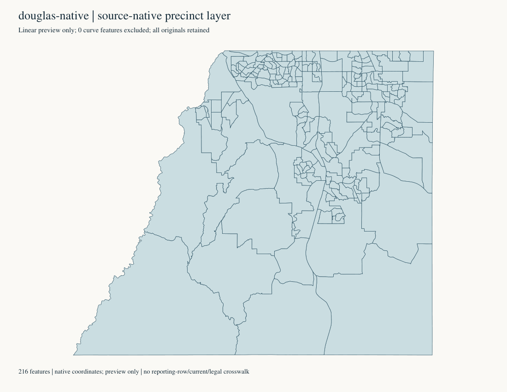
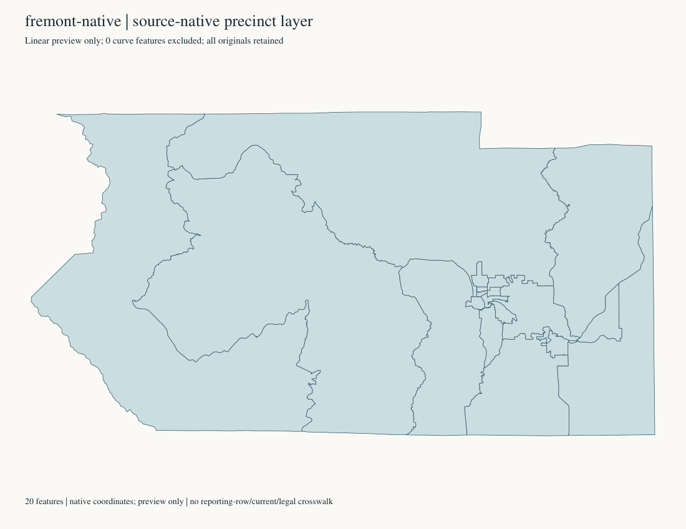

Historical research references only. 2024 president: 3,192,745 named-ticket votes, 3,199 native observations, 64 parents. Exact 80% prefix: 1,992 / 2,554,233; remainder: 1,207 / 638,512. No current legal boundary or reporting-leaf polygon crosswalk is approved. County and Census IDs are kept separate from historical source keys.
64-county Census atlas · Native county GIS · Acquired PDF maps · All64 authorities and hierarchy · Offline county contacts · Methods and gaps

All native fields, coordinates, ring parts, IDs, CRS and source order retained in complete raw pages. Capture / pages · SVG. Shared-parent reference; no historical/current leaf match. True-curve features excluded from this linear preview: 49.

All native fields, coordinates, ring parts, IDs, CRS and source order retained in complete raw pages. Capture / pages · SVG. Shared-parent reference; no historical/current leaf match. True-curve features excluded from this linear preview: 0.

All native fields, coordinates, ring parts, IDs, CRS and source order retained in complete raw pages. Capture / pages · SVG. Shared-parent reference; no historical/current leaf match. True-curve features excluded from this linear preview: 0.

All native fields, coordinates, ring parts, IDs, CRS and source order retained in complete raw pages. Capture / pages · SVG. Shared-parent reference; no historical/current leaf match. True-curve features excluded from this linear preview: 0.